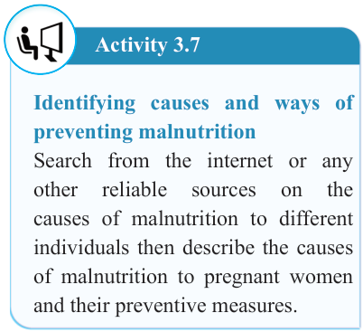
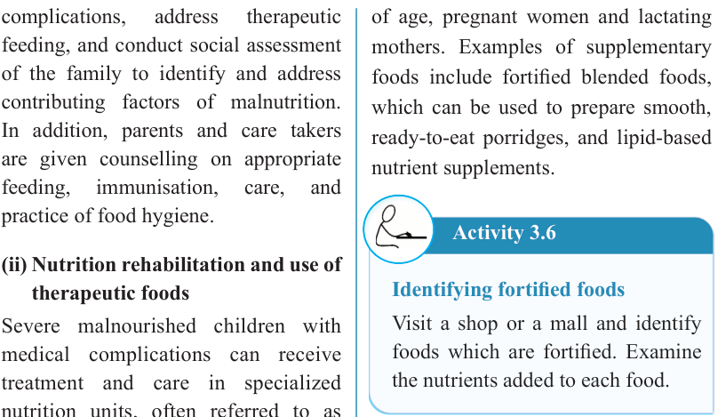
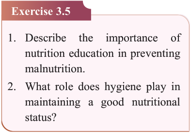

77


Food and Human Nutrition

Form Two



complications,
address
therapeutic
feeding, and conduct social assessment of the family to identify and address contributing factors of malnutrition.
In addition, parents and care takers are given counselling on appropriate feeding,
immunisation,
care,
and
practice of food hygiene.
(ii) Nutrition rehabilitation and use of therapeutic foods
Severe malnourished children with medical complications can receive treatment and care in specialized nutrition units, often referred to as rehabilitation units. They stay with their parents and are provided with therapeutic foods to support quick recovery.
Therapeutic
foods
are
specifically prepared for the treatment of severe acute malnutrition.
(iii) Provision of Supplementary foods
Supplementary foods are ready-to-use, specially formulated foods, which are modified in their energy density, protein, fat or micronutrient composition to meet the nutritional requirements of specific populations. They are used to restore the nutritional status of moderately malnourished individuals or to prevent deterioration in those at the highest risk by meeting their additional nutritional needs. These individuals are particularly children under five years
of age, pregnant women and lactating mothers. Examples of supplementary foods include fortified blended foods, which can be used to prepare smooth, ready-to-eat porridges, and lipid-based nutrient supplements.
Activity 3.6
Identifying fortified foods
Visit a shop or a mall and identify foods which are fortified. Examine the nutrients added to each food.
Exercise 3.5
1. Describe
the
importance
of
nutrition education in preventing malnutrition.
2. What role does hygiene play in maintaining a good nutritional status?
Activity 3.7
Identifying causes and ways of preventing malnutrition
Search from the internet or any other
reliable
sources
on
the
causes of malnutrition to different individuals then describe the causes of malnutrition to pregnant women and their preventive measures.
17/09/2025 16:30